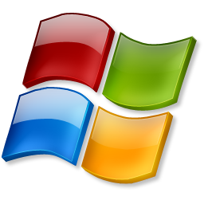
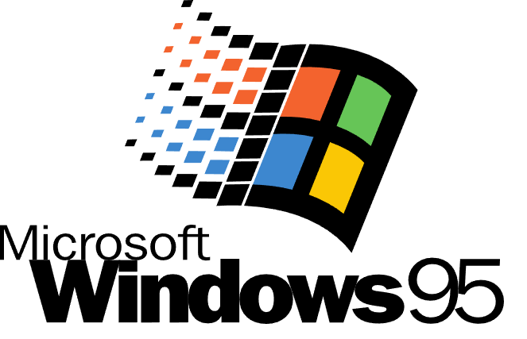
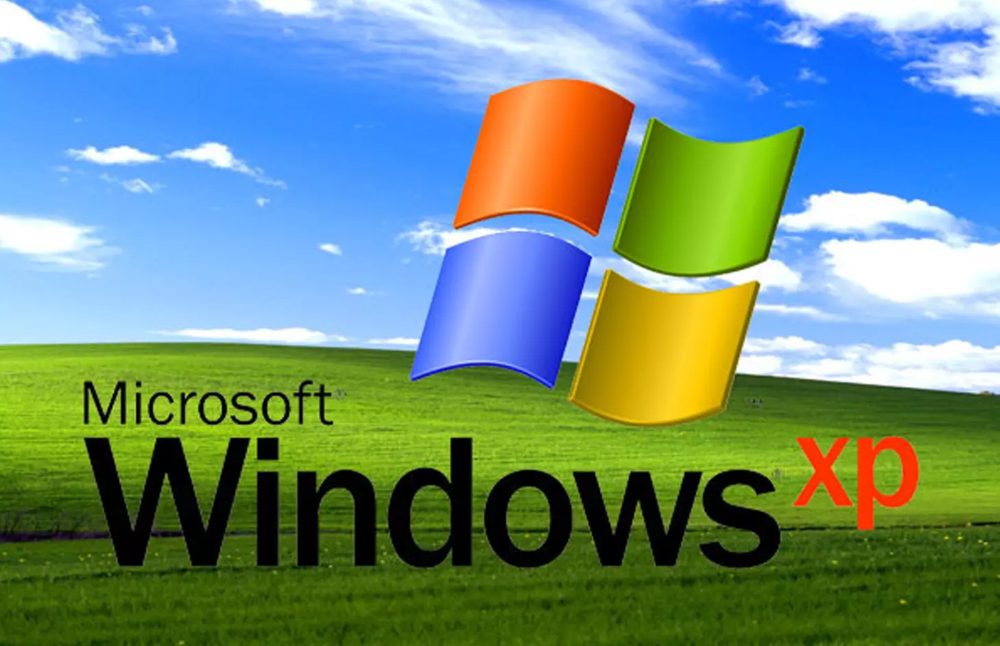
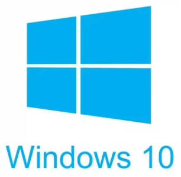
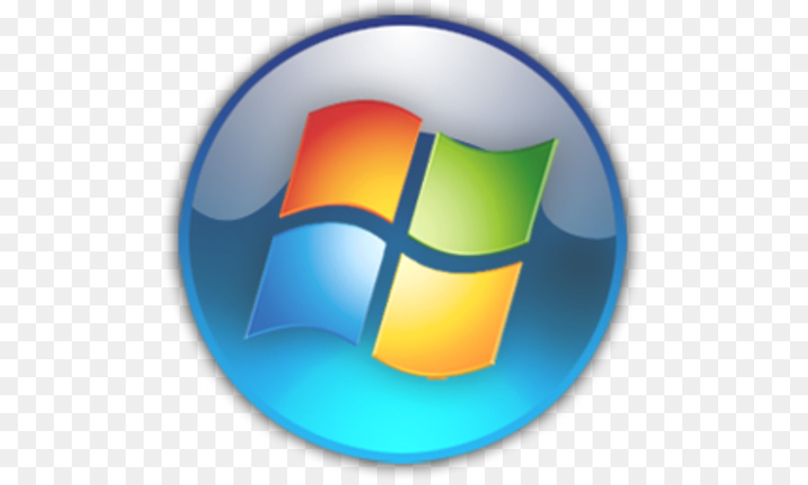

 Windows
A Microsoft Windows a Microsoft Corporation gyártotta operációs rendszerek és az ezekbe épített többfeladatos grafikus felhasználói felületek, valamint bizonyos mobiltechnológiák családja. A „Windows" szó és logó a Microsoft cég védjegye.
A Windows operációs rendszerek szabványos felületet nyújtanak, mely legördülő menükre, ablakokra és egy mutatóeszközre (egérre) alapszik. Nagy részüket magyar nyelven is kiadták (az első magyar nyelvű verzió a 3.1). Az operációs rendszer Vista verziója 35 nyelv összesen 37 változatában érhető el. A Microsoft által kiadott operációs rendszerek a piac több mint 90%-át birtokolják.
A Windows operációs rendszerek alapfilozófiája a könnyen kezelhetőség, valamint a „minden egyben" filozófia (a számos beépített böngésző, médialejátszó alkalmazás), amely leveszi a felhasználó válláról a telepítés, fenntartás, kezelés terheit, és biztosítja a számítógép széles körű használatát az informatikában járatlan felhasználók számára. A könnyen kezelhetőségtől függetlenül sok kritika érte a Windows operációs rendszerek egy részét, bizonyos tervezési hibák vagy a Microsoft üzletpolitikája miatt.
Története:
A Microsoft az Apple cég operációs rendszerének alapötletét felhasználva kezdte el kifejleszteni az ablaktechnikán alapuló rendszerét, a Windows-t. Ez a DOS után forradalmian újnak számított, sikeres volt és olcsó. Az 1.0-s után a 3.0-s rendszer megjelenése jelentett igazán nagy durranást, ami miatt a konkurens cég majdnem csődbe is ment. A Windows 1.0 felületét a Microsoft a Xerox által kifejlesztett koncepciók alapján készítette el, részben lemásolva az Apple cég aktuálisan használt operációs rendszerének működését. A fejlesztés nagy része más cégek által kifejlesztett technológiák felhasználása.
A kezdeti 16 bites verziók (1.0-3.1), illetve a kezdeti 32 bites verziók (Windows 95, Windows 98) a biztonsággal szemben a kényelmet és a teljesítményt tartották szem előtt. A Windows NT vonal kliensekre szánt tagjai (pl. Windows 2000, Windows XP, Windows 10, Windows 11) már fokozatosan egyre több biztonságra irányuló funkciót tartalmaznak.
DOS:
Az MS-DOS egy manapság már ritkán használt operációs rendszer. Régebben megtalálható volt szinte minden szerveren, asztali számítógépen és laptopon. A DOS első változatát, a PC-DOS 1.0-t 1981-ben fejlesztették ki. A DOS 7.1-ig tartott változataival, megnyerte a világ egyik legelterjedtebb operációs rendszere jogát. A felhasználó a géppel parancsok formájában kommunikált. Ezek a DOS változatok nagyon nagy hibatűrő képességűek voltak.
A felhasználói programok szinte a teljes számítógépet és a rendszert képesek voltak elérni és módosítani. A Windows felhasználói igényét gondosan összhangba hozták az egész emberiségre kiterjedő felhasználói táborral. Míg a Unixot egyetemi- és kutatói környezetre fejlesztették és csak a 90-es években nőtt túl ezen a táboron, addig a Windows-t mindig is mindenkinek tervezték, tehát nem csak az elérhető számítógépek képességeit vették figyelembe, hanem a kiszolgálandó felhasználókét is.
Típusok
- Windows 1.0 és 2.0
- Windows 3.1: A legelső magyar nyelvvel is rendelkező Windows operációs rendszer, emellett még támogatta a magyar billentyűzetkiosztást is. Még DOS alapon fut, ezért DOS-ból kell elindítani a WIN paranccsal. Támogatta a 24 bites (True Color) színeket, 1280x1024-es képfelbontást (ha a számítógépnek volt egy arra alkalmas videokártyája), illetve rendszerre készült szoftverek is megjelentek, ezeket későbbi operációs rendszerek is támogatták. 1993 novemberében jelent meg Windows for Workgroups 3.11 nevű verzió, amely a Windows 3.1 hálózati kiegészítésének tekinthető. Később megjelent a csak Kínában forgalmazott Windows 3.2 is. 
- Windows 95/98/Me: 1995-ben megjelent a rengeteg újítást tartalmazó Windows 95: A tálca, a Start menü, az asztalra helyezhető ikonok megjelenése, későbbi verzióknál pedig opcionálissá vált az Internet Explorer webböngésző telepítése is. A 95-től örökölt meg mindent a Windows 98, ezen kívül még több újítást tartalmazott (Dokumentumok mappa első megjelenése, az Internet Explorer egybe integrálása az operációs rendszerrel és az Active Desktop megjelenése). A második kiadása, a Windows 98SE volt igazán sikeres, és nem egy régi számítógépen a mai napig is fut.
- Windows 2000: 2000-ben jelent meg, amely habár a 95/98 névsémát használta, NT alapú volt és cégeknek készült.
- Windows Me (Millennium Edition): sikertelen, rövid ideig kapható verzió, képes volt a Windows-rendszerfájlok védelmére és illetéktelen módosítás után a visszaállításukra, a stabilitási problémák miatt sok kritika érte, amely főleg a rossz hardvertámogatásnak, a rosszul megírt programoknak, illetve a DOS alapú Windows rendszer elavultságának volt köszönhető, ezt még a Microsoft is elismerte.
- Windows NT: leginkább vállalati körökben elterjedt a rendkívüli stabilitása miatt. A működés és a rendszermag újratervezésével a biztonsági hiányosságok kiküszöbölhetővé váltak. Ennek megfelelően nemcsak fájl szintű Hozzáférés Vezérlő Lista (HVL – Access Control List – ACL) alapú jogosultságkezelést kaptak az NT vonal tagjai, hanem a „minden objektum" elvet felhasználva HVL adható tetszőleges objektumhoz, legyen az egy folyamat, eszközmeghajtó, szinkronizációs objektum vagy osztott memória régió. A biztonságos adattárolás érdekében bevezették az 1993-ban piacra dobott új adattárolási eljárást. Az NTFS alkalmazásával növekedett a merevlemezes adattárolás biztonsága. Ezzel a fejlett biztonsági mechanizmussal az NT vonal kliensekre szánt tagjai (Windows 2000, Windows 7, Windows 8, Windows 8.1), illetve a szerverekre szánt tagjai (Windows NT Server, Windows Server 2003, Windows Server 2012) is rendelkeznek. A szerver verziók a jogosultságok központi kezelését is lehetővé teszik a szervezeten belül. 
- Windows XP (experience = élmény): 2001-ben jelent meg, azóta három nagyobb javításon (SP1, SP2, SP3) esett át. A Windows XP-nek megjelent egy 64 bites verziója is, amely az eszközmeghajtók hiánya nem használatos széles körben, továbbá nem érhető el rá a harmadik szervizcsomag. A 14 évig tartó terméktámogatás bizonyítja a verzió sikerét. Az XP a rengeteg probléma ellenére a Microsoft egyik legsikeresebb operációs rendszerének tekinthető. 2010-ben a Windows felhasználók többsége még mindig az XP-t használta, és számos felmérés szerint a világ második legelterjedtebb operációs rendszerévé vált, legalábbis az egyszerű (nem vállalati) felhasználók körében.
- Windows Vista: 2007-ben jelent meg, a rendszer stabilabbnak és biztonságosabbnak mondható az eddigieknél. 2008 tavaszán erre az operációs rendszerre is adtak ki Service Pack-et. A szakemberek, valamint a felhasználók többsége a Microsoft egyik legkiábrándítóbb Windows családjának ítélte. Egy forradalmian új platform volt, ami megalapozta a későbbi sikeres verziókat.
- Windows 7: 2009 október 24-én megérkezett az első teljes magyar verzió. A rendszer rengeteg újítással, új GUI-val (grafikus felhasználói felület) bírt, és teljesítményében is előnyös az otthoni számítógép-használók szempontjából. Több ismert cég kijelentése szerint a Windows 7 egy álruhába öltöztetett Vista, melyet kicsit feljavítottak, használhatóbbá tették. A béta verzió 2009. január 24-ig ingyenesen tölthető volt. Az éles verzió 2009 decemberében jelent meg. Ezt a verziót használják a legtöbben.
- Windows 8: 2012-ben megjelent a Windows 8. A verziók: Windows 8 Alap (core), Windows 8 Pro, Windows 8 Enterprise, Windows RT. Ezen kívül megjelent 3 „előzetes" is: Developer Preview, Consumer Preview, Release Preview
- Windows 8.1 (Windows Blue): A Microsoft új termékfejlesztési ciklusának első terméke, mely 2013. október 17-én jelent meg. A Microsoft 2023. január 10-ig biztosít hozzá frissítéseket.
- Windows 10: 2014. október 1-jén letölthetővé vált a próbaverziója, a nyilvános kiskereskedelmi kiadás pedig 2015. július 29-én jelent meg. Főbb kiadásai:
- S: A Windows 10 lebutított verziója, 
- Home: PC-ken, 2-in-1 PC-ken futásra tervezve
- Pro: A Home változatra épülő kiadás, mely üzleti szolgáltatásokkal bővíti a Home tudását
- Enterprise: Nagyvállalatok számára készült kiadás
- Education: Oktatási célra kifejlesztett verzió
- Mobile: okostelefonokon futásra tervezett kiadás, Windows Phone 8.1 utódja
- IoT: a Windows 10 alacsony fogyasztású, beágyazott rendszerekre szánt változata, célközönsége a számítástechnikával hobbiszinten foglalkozók. Sajátossága a grafikus felület teljes hiánya, azt külön univerzális appként lehet letölteni hozzá.
- Windows 11: A cég 2021. június 24-én bejelentette a Windows 11-et, egy külön esemény keretein belül. A Windows 11 bejelentése előtt egy hónappal a Windows 10X fejlesztését leállították, így nem fog kiadásra kerülni ez a változat. A fejlesztések átkerültek a Windows 10-be és a Windows 11-be.
Félbeszakadt projektek:
A Microsoft indított pár Windows-projektet, amelyek azonban félbeszakadtak, bár a technológiájuk egy részét beépítették más operációs rendszerekbe.
- Cairo: : 1991–1996-ig fejlesztés alatt álló rendszer, a Windows NT 4.0 kódnév alatt. Sosem adták ki, azonban egyes részeit felhasználták más rendszerekben. A grafikus felületét használja a Windows 95.
- Nashville: a Windows 95 továbbfejlesztéseként mint egy „Windows 96" jelent volna meg. Áthidalást jelentett volna a 95-98 közt, és a NT 4.0 - Cairo közt. Ebben kifejlesztett technológiák egy részét más Windows-verziókban felhasználták
- Neptune: Tulajdonképpen egy „Windows 2000 Home Edition" lett volna, ami tartalmazza a Windows 2000 technológiáját, kernelét és a Windows ME felhasználóbarát szolgáltatásait. Legjobb kiadása az 5111 build, amit bétatesztelésre ki is adtak. Tartalmazta a Windows-tűzfal legelső változatát. A projekt félbeszakadt, és végül az Odyssey-vel és a Whistler projektekkel összehangolva a Windows XP lett a végleges kiadás.
- Odyssey: ez lett volna a Windows 2000-et felváltó üzleti operációs rendszer; a kódbázis a Neptune-nal azonos volt.
- Windows NT 5.0: Folytatni tervezték a Windows NT sorozatát a Windows NT 5.0 rendszerrel. A végleges verziót Windows 2000-re nevezték át. Ezzel névvel csak bétaverziók jelentek meg.
- Midori: a Microsoft cég tervezés alatt lévő operációs rendszere.
- Windows 10X: A Windows 10X-et a Microsoft kifejezetten a széthajtható és kinyitható, kétképernyős eszközökhöz tervezte, és ehhez alakította működését is. A Windows 11 bejelentése előtt leállították a projektet és átkerültek a fejlesztett funkciók a Windows 11-be.
A Windows főbb saját alkalmazásai
Számos alkalmazást építettek be az operációs rendszerbe az idők során, hogy a felhasználóknak az operációs rendszer feltelepítése után egyből rendelkezésükre álljanak bizonyos alapvető funkciók, és ne csak a nyers keretrendszert kapják. Már a Windows 3.1 idejében tartozék volt egy óra, Paint, Jegyzettömb, Wordpad. A játékok közül a Pasziánsz és az Aknakereső voltak jelen. A Windows 9x rendszerekben megjelent már a Windows Media Player és az Internet Explorer egyre újabb verziói is. Ezek azóta a rendszer egyre szervesebb részét képezik, és már nem eltávolítható összetevők. Időközben ezen alkalmazások listája folyamatosan bővül, egyre több segédalkalmazás áll rendelkezésünkre az újabb verziók megjelenésével.
Start menü és a tálca
A Windows 95-ben jelent meg az azóta is kulcsfontosságú és folyamatosan bővített és átalakított Start menü. Lényege, hogy a szokásos alkalmazói ablakoktól jól eltérő és ráadásul állandó helyen érhetjük el a számítógép legfontosabb helyeit. Az aktuális Windows verzió logója látható rajta. A start menü olyan, mint egy állandóan kéznél lévő parancssor. A külső színfalak mögött, a rendszerprogramozói szemszögből a szóban forgó Start Menü is egy ablak, csak nagyon speciális formája van, és kedvenc szokása a képernyő alján csücsülni.
A tálca fogadja a korábban az asztalra kerülő ikonokat.
Bal oldalon: a Start gomb, mellette az eszköztárak és a futó programok gombjai.
Jobboldal: óra, egyes háttérben futó folyamatok ikonjai láthatóak.
Az újítás lényege: hasznos lehet, ha speciális célokra a szokásos működésű és kinézetű ablakok helyett igen speciális kinézetű és működésű ablakokat hoznak létre.
Windows Media Player és Internet Explorer:
Ezekkel a termékekkel a Microsoft egy alapszintű programot bocsátott a felhasználók rendelkezésére, hogy egyből használhassák gépüket bizonyos funkciókra (böngészés, médialejátszás). Később ezek alap összetevőkké váltak, és a telepítő automatikusan feltelepíti mindegyiket.
A Windows termékei és technológiái:
Kezdetben a Windows csak egy, a DOS operációs rendszer alatt futó grafikusfelhasználóifelület-család volt; a Windows NT-től kezdve tekinthető önálló asztali operációs rendszernek. Mára a Microsoft Windows termékek már az operációs rendszerek és mobiltechnológiák külön családját alkotják.